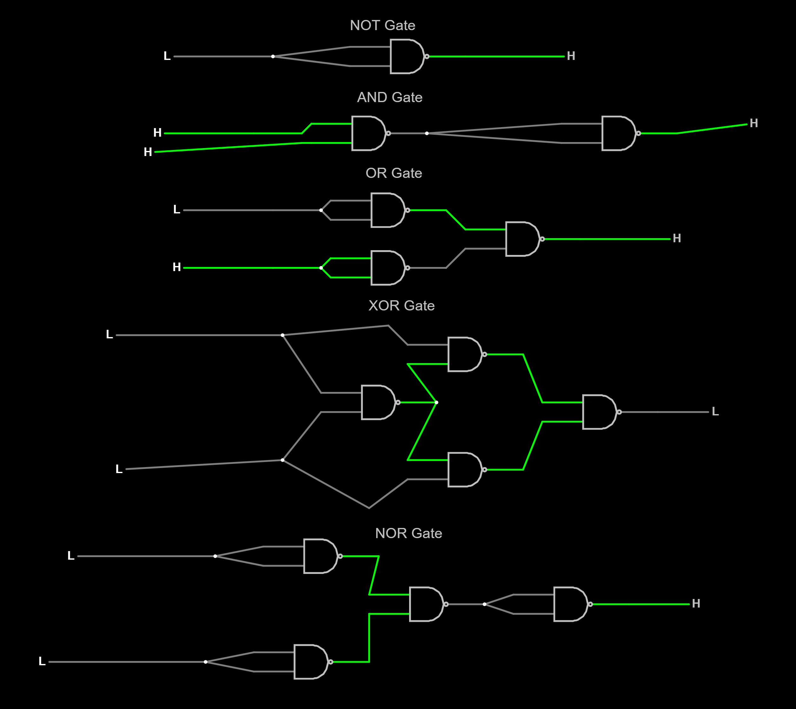

Name: Tanay Sreedharan
Date: 14-Sep-2022
Logic Gates Image

What did I learn?
I learned about the various different logic gates. I also developed many skills on how to use these logic gates, and how to even create many of these logic gates using my own tools.
What challenges did I encounter?
I sometimes found it difficult to create the logic gates. It took me multiple attempts to figure out how to correctly make the XOR gate. It also took me a long time to figure out how to upload a picture to tabby as it was my first time. How could this experience be improved?
It was a really good lesson, and I do not know what could be improved.
How has what I learned affected my thinking?
This has shown me many of the tools that engineers use. It has shown me how to use and create logic gates, and has expanded my thinking on these topics.